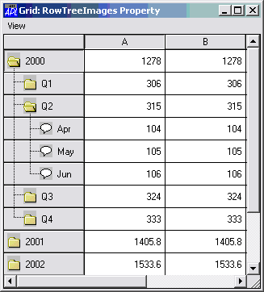

| Applies To: | Grid |
Description
The RowTreeImages property is a simple character vector or ref, or a vector of character vectors or refs, that specifies the names(s) of, or ref(s) to, Bitmap objects that are used to display the tree nodes for a Grid object.
Note that images in tree nodes are only displayed if RowTreeStyle is set to 'ImagesOnly', 'ImagesAndLines', or 'AllImagesAndLines'∇.
If RowTreeImages is not specified default images are used.
The Bitmap specified by the 1st element of RowTreeImages is used to display unopened nodes.
The Bitmap specified by the 2nd element of RowTreeImages is used to display opened nodes.
The Bitmap specified by the 3rd element of RowTreeImages is used to display nodes without children.
'Closed'⎕WC'Bitmap' 'Folder.bmp'
'Open'⎕WC'Bitmap' 'FolderOpen.bmp'
'Item'⎕WC'Bitmap' 'Ideas'
F.G.RowTreeStyle←'AllImagesAndLines'
F.G.RowTreeImages←'Closed' 'Open' 'Item'